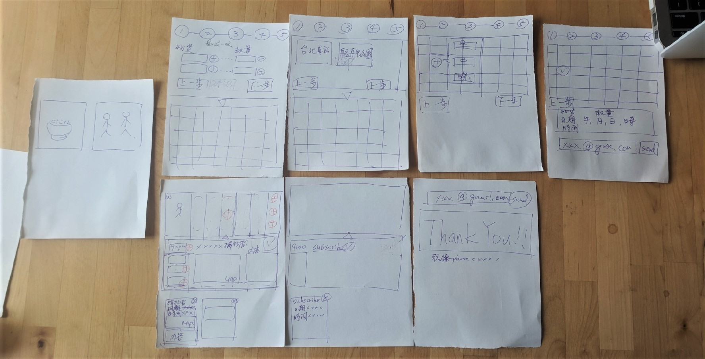
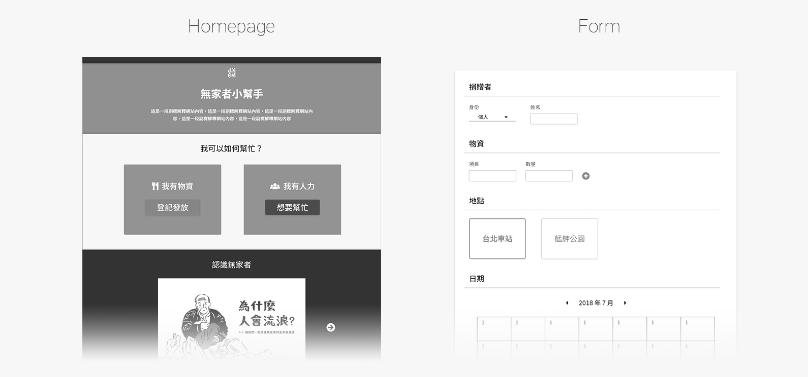
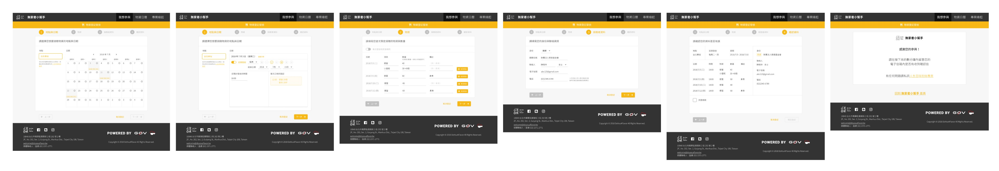
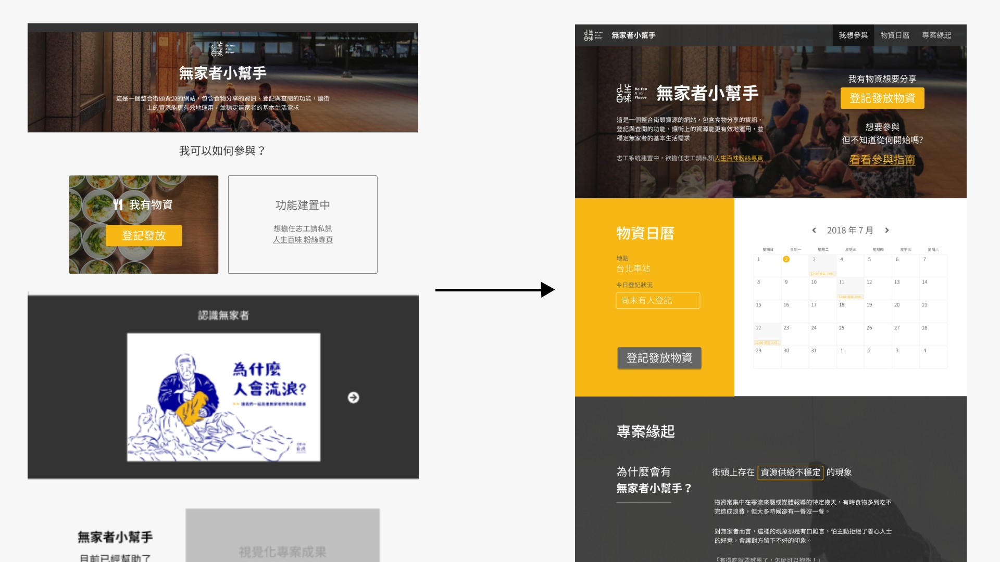
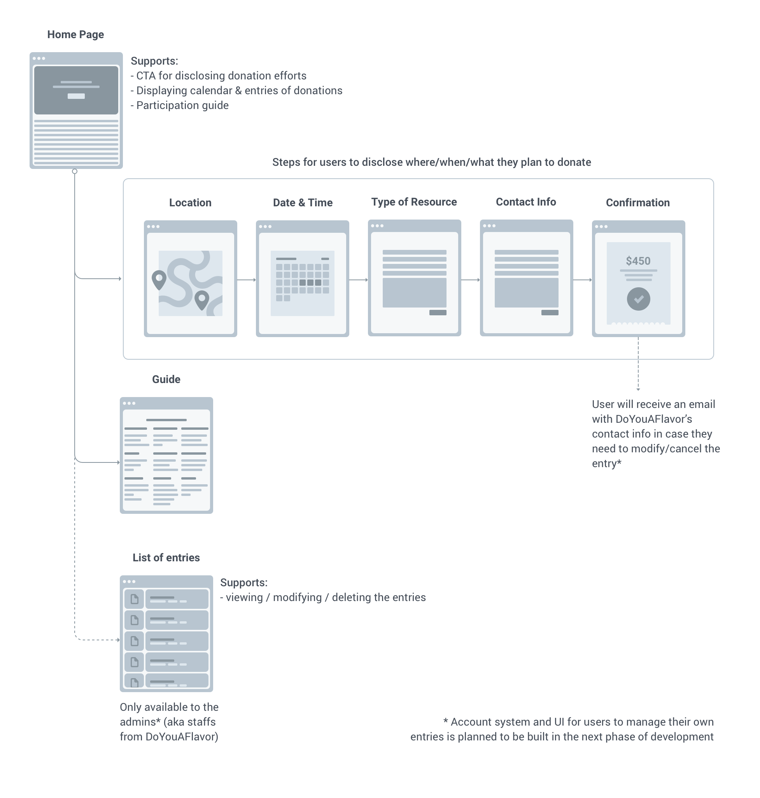

Background
back to topChallenge
Although there's a high number of resources being donated overall, the uneven distribution of those resources in time, location, and type still makes it challenging for homeless people in Taipei.
Goal
To better coordinating donated resources from different organizations and individuals for homeless people in Taipei City
Homeless Helper is a web application made by DoYouAFlavor (人生百味), a social enterprise in Taiwan aiding disadvantaged individuals with the mission of breaking down stereotypes about street people and creating new possibilities for people living in poverty. It was one of the six projects funded by g0v Civic Tech Prototype Grant in 2018.
The project spun off from a hackathon hosted by and taken place at DoYouAFlavor, with a team of volunteered developers, product managers, and me leading the design efforts. I was involved in the first phase of the project to conceptualize and to deploy the MVP version of the design and to plan out the release of the next version.
See article from g0v.news for full description of the project [in Mandarin]: 【2018 g0v 獎助金】無家者小幫手 Homeless Helper
Process
back to topUnderstanding
Starting with interviewing staffs about their experience of issuing resources on the street, as well as extracting insights from previous ethnographic researches that was conducted with donors and homeless people, we discovered following pain points for different stakeholders.

For Donors
including individuals, small businesses, and charity groups
- Donors don’t necessarily know when / where / what resources are needed the most.
- Therefore, lots of resources are wasted and donors are less motivated to donate.
For Homeless People
- It’s hard for them to expect when, where, and what resources would be distributed.
- When there’s an overflow of donated resources and they inevitably have to discard what they can not keep, it makes them seem ungrateful to the public that do not know the reasons behind.

For DoYouAFlavor
as the coordinator between donors and homeless peoples
- As a small social enterprise, it’s impossible for them to manually coordinate across different donation efforts and needs across the city.
Exploring
Brainstorming and group sketch sessions were conducted to explore different concepts that can help DoYouAFlavor to have a clearer idea and to better coordinate different donation efforts.
After comparing different ideas ranging from a dedicated google sheet, sms reporting system, chat-bot etc., the solution we saw most appropriate was a responsive web calendar system to collect and display donation efforts publicly. Donors can disclose what / when / where they would like to issue the resources on their own. DoYouAFlavor can assist and coordinate the efforts if needed with the collected information.
Strategizing
Going with the pain points, along with consideration of feasibility under a limited timeline and resources, our priority and targeted users at different stages were determined as the following:
Short-term (MVP)
Collect and display existing donation efforts from charity groups that usually issue certain amount of resources on an established schedule.
Mid-term
Collect and display sporadic donation efforts from individuals and small business. Admin from DoYouAFlavor will have dedicated interface to better manage user entries.
Long-term
Be able to highlight gaps in needs and efforts, and to further motivate the public to distribute resources at the time and place that will maximize the outcome.
Iterating
Following team meetings with the staffs from DoYouAFlavor were held while different levels of wireframes and mockups were created for different purposes.
Low-fi Wireframe
created to confirm idea and facilitate discussion with client and the team Throughout the iterations, form design became our first ux hurdle. The lengthy form was intimidating to users, especially for those that have multiple resources to issue on a recurring basis.
After testing with early wireframes to gather user feedback, the long form were broken into steps and presented on different pages considering the complexity of each steps. Users would be asked to share where / when / what they were donating before filling out personal information, with the reason of asking for those information explicitly stated. Wording on each steps were also revised to feel more approachable, as if user were interacting with a real-life agent.
Iterations
Forms updated with steps and better copywriting The second ux challenge we had was user motivation. How do we motivate existing donors to participate in sharing their planned donation efforts with the public? Furthermore, how can we engage potential donors to start learning about the issues?
As a result of several informal user sessions, the homepage was updated with better CTA, calendar with the entries submitted was displayed before the user start submitting their own entries, and a guide explaining how this project would benefit both donors and homeless people.
Iterations
Homeage updated to better motivate user action Design
back to topHomeless Helper
an open calendar system to collect and show donation efforts as public information
By making donation needs and efforts public and easily accessible information, it
- lowers the barrier of participation for donors;
- reduces the cost of coordination;
- better matches the efforts to the needs of homeless people;
- establishes a stable and more coordinated distribution of efforts in the long run.
Ultimately, Homeless Helper hopes that through improving the experience of participation, it would help to raise public awareness and to correct false perception of issues around homeless people.
Overall, Homeless Helper supports
Browsing
the calendar to know current donation efforts MVP builtDisclosing
donation efforts by donors themselves MVP builtMatching
voluteers to distribute donated reources under constructionEducating
the public about homeless people under constructionSite Structure (MVP)
Prototype*
Open in Invision*The site was only built in Mandarin, so was the prototype. Sorry to English speakers!